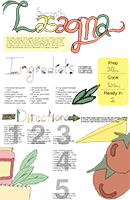
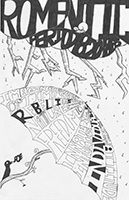
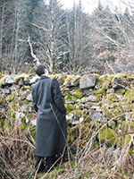

Graphic
Adseries
For a project, we were required to make an adseries for magazine and newspaper. The object I had to design for was an industrial nut.
Layout
Boeing Booklet
For a project we had to develope a commemorative booklet for Boeing.
Poster/Graphic
Lasagna
Taking the theme that gingers have no souls, I made up an recipe poster to show them how to get love into their lasagna.
Illustration/Poster
Taking some notes from my American Literature class, I illustrated them for easier visual learning.
Photography
Various examples
Photography is a hobby that allows me to keep a visual record of the places I have been.